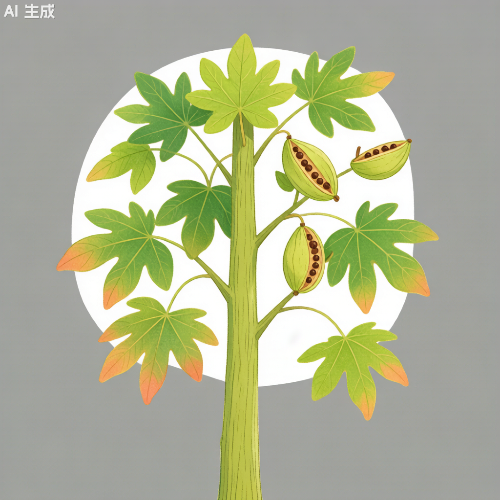

梧桐 Firmiana simplex

形态特征
梧桐（Firmiana simplex）为落叶乔木，高15–20米。树皮光滑，绿色或灰绿色，是其最显著的识别特征。叶大，掌状3–5浅裂，宽15–30厘米，基部心形，裂片先端渐尖，全缘，叶面深绿色，背面被星状毛。叶柄长10–20厘米。圆锥花序顶生，长约20–50厘米，花小，淡黄绿色，无花瓣；花萼5裂，裂片线形，向后反卷。蓇葖果膜质，叶状，成熟前开裂，长5–8厘米，宽约2厘米。种子2–4粒，球形，着生于蓇葖果的边缘。花期6–7月，果期9–10月。梧桐与法国梧桐（二球悬铃木）完全不同——梧桐属锦葵科树皮光滑绿色，法国梧桐属悬铃木科树皮片状剥落。
分布与生境
梧桐原产中国，南北各省均有栽培。喜光，喜温暖湿润气候，不耐严寒，在-15℃以下低温时易受冻害。对土壤要求不严，但在深厚肥沃、排水良好的砂质壤土中生长最佳。不抗风，大风易造成树干折断或倒伏。
分类学
梧桐传统上归入梧桐科（Sterculiaceae），但依据APG IV分子分类系统，梧桐科已被并入锦葵科（Malvaceae），梧桐属（Firmiana）隶属锦葵科梧桐亚科。种加词"simplex"意为"简单的"，指其花结构的简化——无花瓣，仅由萼片组成。梧桐属全球约15种，分布于亚洲和非洲的热带和亚热带地区。梧桐与中国的"泡桐"（Paulownia spp.）是完全不同的植物——泡桐属泡桐科。
生态习性
梧桐为喜光阳性树种，不耐荫蔽。深根性，主根较深，但侧根不发达，抗风能力较弱。喜温暖，最适年均温15–22℃；不耐严寒，在-15℃下可能遭受冻害。生长速度较快，10年生树高可达8–12米，胸径15–20厘米。寿命中等，通常80–150年。对土壤肥力要求较高，在贫瘠土壤中生长不良。梧桐叶大荫浓，夏季遮荫效果极好，是华中、华东地区传统的庭荫树。
利用与文化
梧桐在中国文化中具有极高的象征地位。"家有梧桐树，引得凤凰来"的俗语广为人知。古人认为梧桐是凤凰栖息的唯一树种，象征祥瑞和高洁。《诗经·大雅》有"凤凰鸣矣，于彼高冈。梧桐生矣，于彼朝阳"的诗句。梧桐木质轻软，纹理美观，是制作古琴、琵琶、古筝等传统乐器音板的首选材料。上海简称"沪"，但在中国传统文化中，"梧"与"桐"的意象常被联想到江南世家望族的庭院——"梧桐庭院"象征书香门第。梧桐还是入药植物，根、叶、花均可入药。木材也可用于制作家具和木屐。
参考文献
- 《中国植物志》第49卷: 133页. 科学出版社.
- APG IV. 2016. Botanical Journal of the Linnean Society 181(1): 1–20.
- 王宪楷. 1995. 梧桐的本草考证. 中国中药杂志.